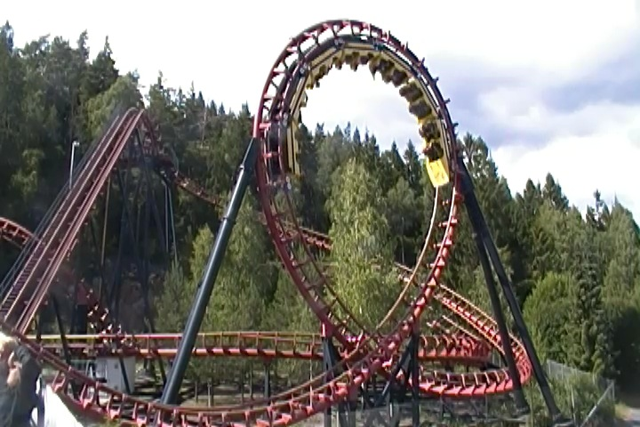
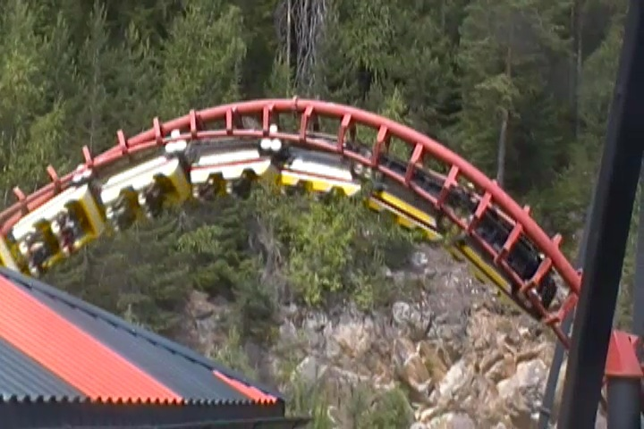
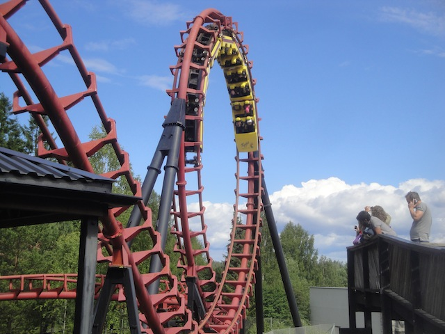
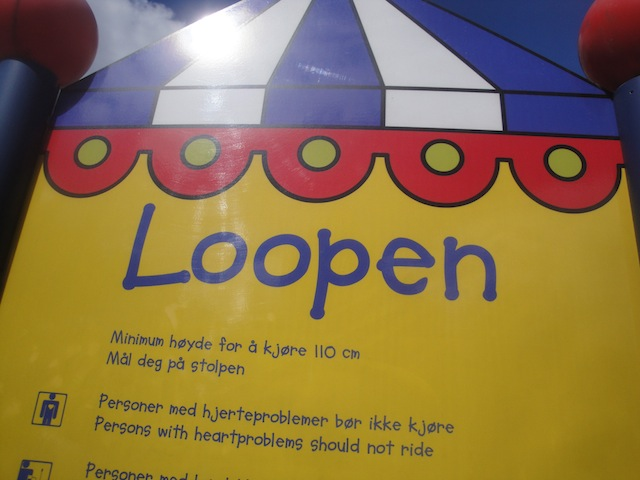

| |
Loopen Review

We're here at Tusenfryd. Today's ride we'll be reviewing for you is Loopen. Now this is one of those Tornado Loopscrew models, so this is basically a Whirlwind. Only with a loop instead of one of the corkscrews. It certainly may look interesting (at least compared to other loopscrews), this ride is not at all. It's pretty lame and the operations for this are just dreadful. You see, this ride only has brakes in the station. So it can only run one train. And because it uses outdated technology, the train can sometimes overshoot and you'll have to go around again (Normally, that's awesome. But this ride sucks). And all the restraints have to be checked manually. So it takes a long time to dispatch the trains, and you just might overshoot, and the ride isn't even that good. Let's ride and see why. You roll around a curve and head up the lifthill. It's slow, kind of creaky, and you really get a sense of what this ride is about. Plus, passing by the inversions ise fun. Anyways, you reach the top, and slowly head down the curved first drop. It's small, but it gives us enough speed to go through the course without making it feel like we're crawling. We then head straight from the first drop into the Loop. Hmm, so far, this is mildly fun. Wee. I'm kind of liking this. But the ride continues. We then head around this turnaround and...SMACK!!! Yeah, this sucks. Considering how I'm already in a bad mood due to the operations of the ride, this roughness is not what I needed. We then head from the turnaround and dip down to the ground as we tumble into the corkscrew. And when I say you tumble through it, I mean it. Not pleased at all. We then head around another small little turnaround that is sort of jerky before we glide through some straight track before heading into the brake run. And hey. You just might overshoot, and in which case, you get to go again!!! Joy. Now it's not very often that I say this, but this ride needs to be demolished. And I'm not just saying that because it sucks. I've been on many rides much worse than this. This is FAR from the worst. I'm saying that because of all the operations stuff I mentioned before. The overshooting, the manual checking of the restraints, the ability to only run one train, all these are reasons I feel the ride should be demolished. I mean, it's not even that good. That space could be used for a far better coaster that would be so much more fun. But if you're in Tusenfryd, you might as well get the credit.
5/10
Location: Tusenfryd
Opened: 1988
Built by: Vekoma
Last Ridden: June 21, 2014
Loopen Photos



Home
|